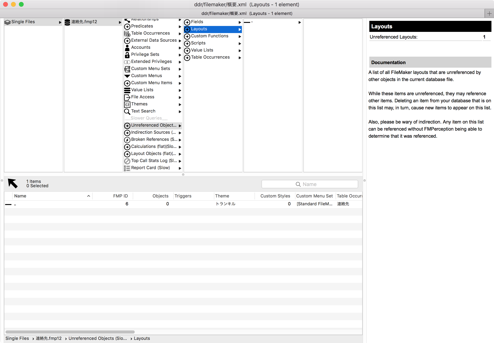
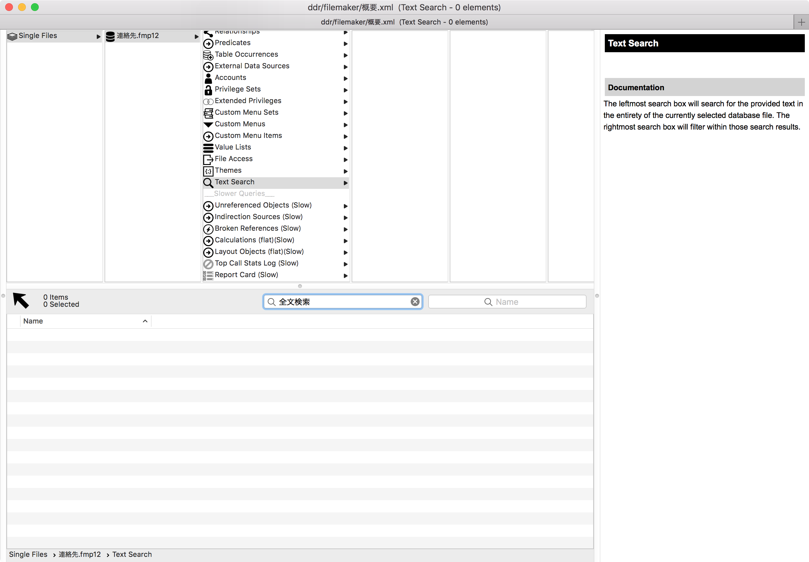

FileMakerで開発をしていて…
「この使ってなさそうなフィールド削除したいけど、どこかで使われていたら困るから、消せないな…」
なんてことはありませんか？
そうですよね。ありますよね。
そんな時、あなたはどうしてますか？
一般的なFileMaker開発者でしたら、DDR(データベースデザインレポート)をエクスポートして、分析ツールを使っていますよね。
サードパーティの分析ツール
有名なツールを以下に。
ちなみに、私はFMPerceptionと、BaseElementsを使っています。
分析ツールを使ってできること
- (名前の通り)ファイルの分析
- 分析ツールに取り込んだスクリプトやフィールドを、ファイルメーカーにコピペできる
- ファイル間の差分を確認できる
個人的には、分析とファイルの差分が大きいと思っています。
ファイルの差分を知るためにも、頻繁にDDRをエクスポートしています。
ファイルの差分を確認するためのツールを作りました
FMPerceptionを使っているので、自分のために差分を見やすくするためのツールを作りました。
fmperception-diff-viewer
よければ、つかってください。
削除する時に注意すること
さて、本題です…
FMPerceptionは優秀なので、どこからも使われていない(未参照)レイアウトやフィールドはUnreferenced Objectsを見ればわかります。

ここの画面で確認し「参照されていないから、削除だ！」とやってしまうと、以下のようなケースでエラーが発生する可能性があります。
エラーになるケース
- 名前を指定して実行する系のスクリプトステップを、ハードコードしている場合
- ファイルをまたいで参照されているが、参照しているファイルのDDRをエクスポートしていない場合
ここも一般的な開発者であればカスタム関数をつかったり、GetFieldName ( fieldName )などを使うと思いますが…
ということで…
削除する際には、
- 関連するファイルのDDRをすべてエクスポートすること
- 削除するオブジェクトの名称で、全文検索すること
をしてから、削除することをおすすめします。
